Graph neural networks
Lecture 2 · Jhony H. Giraldo · Télécom Paris, Institut Polytechnique de Paris
Lecture 1 ended with a limitation. Shallow node embeddings such as DeepWalk and node2vec learn one vector per node, so they cannot use node features, cannot generalize to unseen nodes, and must be retrained whenever the graph changes. This note replaces that lookup table with a learned encoder: a neural network whose linear maps are graph convolutions.
The route taken here is the signal-processing one. We first ask what a convolution is, observe that convolutions in time and space are polynomials in a shift operator, define the same object for an arbitrary graph, and only then compose graph filters with pointwise nonlinearities to obtain a graph neural network. The two most widely used architectures, GCN and GAT, then appear as principled approximations rather than as arbitrary formulas.
1 Learning objectives
After studying this note, you should be able to:
- explain why multilayer perceptrons do not scale to graph-structured data and why convolutional models do;
- write a convolution in time, in space, and on a graph as a polynomial in a shift operator;
- derive the GCN propagation rule as an approximation of a graph convolutional filter;
- express GCN and GAT inside the message-passing framework and state what distinguishes them;
- compute the shapes of every matrix in a two-layer GCN and count its parameters;
- diagnose homophily, over-smoothing, and over-squashing, and name a remedy for each;
- implement a GCN and a GAT in PyTorch Geometric.
2 Where Lecture 1 stopped
Recall the shallow encoder from Lecture 1: \(\operatorname{ENC}(u) = \mathbf{z}_u = \mathbf{Z}\mathbf{e}_u\), an embedding lookup trained on random-walk co-occurrences.
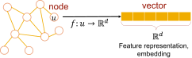
Three problems follow directly from that definition.
- Parameter count. \(\mathbf{Z}\in\mathbb{R}^{d\times N}\) has \(dN\) parameters. The model grows with the graph.
- Transductivity. A node that was absent at training time has no column in \(\mathbf{Z}\), so it has no embedding.
- Features are ignored. If node \(v\) carries a feature vector \(\mathbf{x}_v\in\mathbb{R}^{F}\), the lookup table has no way to use it.
We want an encoder that is local, has a fixed number of parameters independent of \(N\), reads node features, and can be applied to a graph it has never seen. That is exactly the specification a convolutional architecture satisfies in Euclidean domains.
3 Why convolutions, and why they are hard on graphs
Fully connected neural networks do not scale. A single dense layer mapping \(\mathbb{R}^{N}\to\mathbb{R}^{N}\) has \(N^2\) parameters; for a graph with a million nodes that is \(10^{12}\) weights for one layer. Convolutional neural networks avoid this by reusing a small filter everywhere in the domain, which makes the parameter count independent of the input size and makes the layer local and translation equivariant.
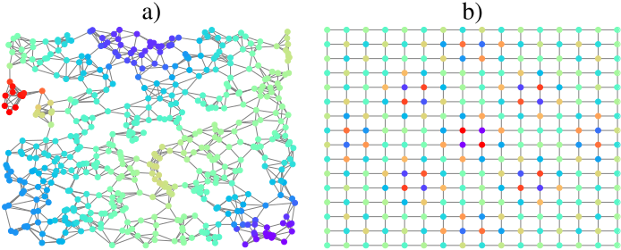
The obstacle is that the definition of convolution used in signal processing relies on shifting a filter across the domain, and an arbitrary graph has no notion of translation. The resolution is to notice that shifting is itself a linear operator, and that this operator is precisely the adjacency matrix of the domain.
4 Time and space are graphs
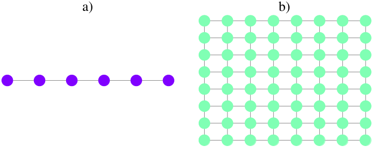
A discrete-time signal \(\mathbf{x}\in\mathbb{R}^{N}\) lives on a directed line graph: sample \(i\) is connected to sample \(i+1\). An image lives on a grid graph: pixel \((i,j)\) is connected to its four neighbors. In both cases the adjacency matrix implements the elementary shift. For the line graph,
\[ \mathbf{S}= \begin{bmatrix} 0&0&\cdots&0\\ 1&0&\cdots&0\\ \vdots&\ddots&\ddots&\vdots\\ 0&\cdots&1&0 \end{bmatrix}, \qquad (\mathbf{S}\mathbf{x})_i=x_{i-1}. \]
Multiplying by \(\mathbf{S}\) delays the signal by one sample; multiplying by \(\mathbf{S}^{k}\) delays it by \(k\).
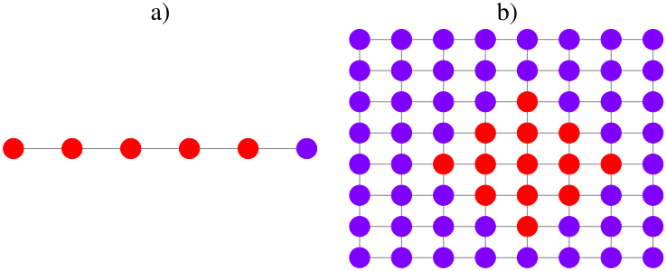
Now write the familiar convolution of a signal \(\mathbf{x}\) with a filter \(\mathbf{h}=\{h_k\}\):
\[ \mathbf{z} = h_0\mathbf{S}^{0}\mathbf{x} + h_1\mathbf{S}^{1}\mathbf{x} + h_2\mathbf{S}^{2}\mathbf{x} + \cdots = \sum_{k=0}^{\infty} h_k\mathbf{S}^{k}\mathbf{x}. \]
This is the ordinary discrete convolution. Nothing in the expression, however, requires \(\mathbf{S}\) to be the line-graph adjacency matrix.
Check 1 — The key observation
A convolution is a polynomial in the shift operator. The filter contributes the coefficients \(h_k\); the domain contributes the operator \(\mathbf{S}\). Replace \(\mathbf{S}\) by the adjacency matrix of an arbitrary graph and the same formula defines a convolution on that graph.
5 Graph language and shift operators
We recall the notation from Lecture 1 and fix the operators used throughout.
Definition 1 — Graph shift operator
Let \(\mathcal{G}=(\mathcal{V},\mathcal{E})\) with \(N=|\mathcal{V}|\), adjacency matrix \(\mathbf{A}\in\mathbb{R}^{N\times N}\) and degree matrix \(\mathbf{D}=\operatorname{diag}(\mathbf{A}\mathbf{1})\). A graph shift operator \(\mathbf{S}\in\mathbb{R}^{N\times N}\) is any matrix satisfying \(S_{ij}=0\) whenever \(i\neq j\) and \((v_j,v_i)\notin\mathcal{E}\).
Common choices are
\[ \mathbf{A}, \qquad \mathbf{L}=\mathbf{D}-\mathbf{A}, \qquad \hat{\mathbf{A}}=\mathbf{D}^{-1/2}\mathbf{A}\mathbf{D}^{-1/2}, \qquad \hat{\mathbf{L}}=\mathbf{D}^{-1/2}\mathbf{L}\mathbf{D}^{-1/2}. \]
The sparsity condition is what matters: \(\mathbf{S}\) may only mix a node with its neighbors. Which operator you pick is not a detail — it fixes the scaling of the diffusion and therefore the conditioning of the whole network, as Section 10 shows.
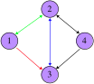
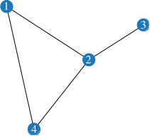
Worked example — Reading Figure 5
The adjacency matrix of the graph is
\[ \mathbf{A}= \begin{bmatrix} 0&1&1&0\\ 1&0&1&1\\ 0&1&0&0\\ 0&1&1&0 \end{bmatrix}. \]
Since \(A_{13}=1\) but \(A_{31}=0\), the matrix is not symmetric: the graph is directed. Every nonzero entry equals one, so it is unweighted.
5.1 Why the adjacency matrix is a bad data structure
Real graphs are sparse: a node has far fewer neighbors than \(N\). Storing all \(N^2\) entries is therefore wasteful, and quickly impossible.
Worked example — A social network with \(N = 25\,000\,000\) users
A double-precision float occupies \(64/8 = 8\) bytes, so a dense adjacency matrix needs
\[ 8\,N^{2} = 8\times(2.5\times10^{7})^{2} = 5\times10^{15}\ \text{bytes} = 5\ \text{petabytes}. \]
No machine holds that in RAM. Now suppose every user has \(300\) connections on average. An edge list stores two node indices per edge:
\[ 8\times N\times 300\times 2 = 1.2\times10^{11}\ \text{bytes} = 120\ \text{gigabytes}, \]
a reduction by more than four orders of magnitude. This is why PyTorch Geometric represents a graph as an edge_index tensor of shape \(2\times|\mathcal{E}|\) rather than as a matrix.
For Figure 6, the edge list in the format PyTorch Geometric expects is
\[ \texttt{edge\_index}= \begin{bmatrix} 1&1&2&2&2&3&4&4\\ 2&4&1&3&4&2&1&2 \end{bmatrix}, \]
with each undirected edge stored in both directions. The adjacency matrix remains the right tool for analysis; the edge list is the right tool for computation.
6 Graph signals
Definition 2 — Graph signal
A graph signal is a map \(x:\mathcal{V}\to\mathbb{R}^{m}\) from the node set into a vector space. For \(m=1\) we collect the values into a vector \(\mathbf{x}\in\mathbb{R}^{N}\); for \(m=F\) features we collect them row-wise into \(\mathbf{X}\in\mathbb{R}^{N\times F}\).
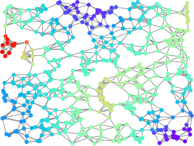
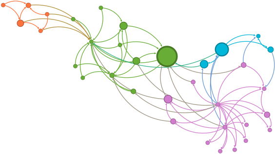
The important shift in perspective is that the graph and the signal are separate objects. The graph is the domain; the signal is the data on it. In a molecule, nodes are atoms, the signal is the atom type; in a particle simulation, nodes are particles, the signal is their state; in a citation network, nodes are papers and the signal is a bag-of-words vector.
7 Diffusion: what the shift operator does
Applying \(\mathbf{S}\) to a signal mixes each node with its neighbors:
\[ \mathbf{y}=\mathbf{A}\mathbf{x}, \qquad y_i=\sum_{j=1}^{N}a_{ij}x_j=\sum_{j\in\mathcal{N}_i}a_{ij}x_j . \]
Only neighbors contribute, and in a weighted graph stronger edges contribute more. This single operation is the entire local mechanism behind every model in this note.
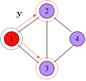
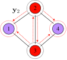
Worked example — Two diffusion steps
For the graph of Figure 8 with \(\mathbf{x}=[1,0,0,0]^{\top}\),
\[ \mathbf{y}= \begin{bmatrix} 0&1&1&0\\ 1&0&1&1\\ 1&1&0&1\\ 0&1&1&0 \end{bmatrix} \begin{bmatrix}1\\0\\0\\0\end{bmatrix} = \begin{bmatrix}0\\1\\1\\0\end{bmatrix}, \qquad \mathbf{y}_2=\mathbf{A}\mathbf{y}= \begin{bmatrix}2\\1\\1\\2\end{bmatrix}. \]
After one step the signal occupies the one-hop neighborhood of node 1; after two steps it has reached every node, and the entry \(2\) at node 1 counts the two length-two walks returning to it.
If the graph is weighted with \(a_{12}=0.5\), the same computation gives \(\mathbf{y}=[0,0.5,1,0]^{\top}\) and \(\mathbf{y}_2=[1.25,1,0.5,1.5]^{\top}\): the weaker edge transports less.
7.1 The diffusion sequence
Composing the operation defines the diffusion sequence
\[ \mathbf{x}^{(k+1)}=\mathbf{S}\mathbf{x}^{(k)}, \qquad \mathbf{x}^{(0)}=\mathbf{x}, \]
which unrolls into the power sequence \(\mathbf{x}^{(k)}=\mathbf{S}^{k}\mathbf{x}\).

Check 2 — Always implement the recursion
The two expressions \(\mathbf{x}^{(k+1)}=\mathbf{S}\mathbf{x}^{(k)}\) and \(\mathbf{x}^{(k)}=\mathbf{S}^{k}\mathbf{x}\) are mathematically identical and computationally very different.
Each recursive step is one sparse matrix–vector product, costing \(O(|\mathcal{E}|)\); \(K\) steps cost \(O(K|\mathcal{E}|)\) and never build a matrix. Forming \(\mathbf{S}^{k}\) explicitly costs a dense matrix product and destroys sparsity: powers of a sparse matrix fill in rapidly, so \(\mathbf{S}^{k}\) soon needs \(O(N^{2})\) memory. Use the recursion; use the powers only for analysis.
8 Graph convolutional filters
Definition 3 — Graph filter and graph convolution
A graph filter is a polynomial in the shift operator,
\[ \mathbf{H}(\mathbf{S})=\sum_{k=0}^{\infty}h_k\mathbf{S}^{k}. \]
Applying it to a graph signal produces the graph convolution
\[ \mathbf{y}=\mathbf{H}(\mathbf{S})\mathbf{x}=\sum_{k=0}^{\infty}h_k\mathbf{S}^{k}\mathbf{x} . \tag{1}\]
In practice the sum is truncated at \(K\) taps, giving a filter of order \(K-1\). Three properties make Equation 1 the right generalization of the classical convolution.
- Locality. The \(k\)-th term reads only the \(k\)-hop neighborhood, so a \(K\)-tap filter is supported on \(K-1\) hops.
- Fixed parameter count. The filter has \(K\) coefficients whatever the size of the graph. This is the property that shallow embeddings lacked.
- Permutation equivariance. If \(\mathbf{P}\) is a permutation matrix, then \(\mathbf{H}(\mathbf{P}\mathbf{S}\mathbf{P}^{\top})\mathbf{P}\mathbf{x}=\mathbf{P}\mathbf{H}(\mathbf{S})\mathbf{x}\), because \((\mathbf{P}\mathbf{S}\mathbf{P}^{\top})^{k}=\mathbf{P}\mathbf{S}^{k}\mathbf{P}^{\top}\) and \(\mathbf{P}^{\top}\mathbf{P}=\mathbf{I}\). Relabelling the nodes relabels the output and changes nothing else — exactly the invariance Lecture 1 demanded of a graph model.
Aggregation grows from local to global as \(k\) increases: the filter reads the node itself (\(k=0\)), then its neighbors (\(k=1\)), then their neighbors (\(k=2\)), and the coefficients \(h_k\) decide how much each scale contributes.
9 From filters to graph neural networks
A neural network is a composition of layers, each a linear map followed by a pointwise nonlinearity. The three architectures below differ only in which linear map they use.
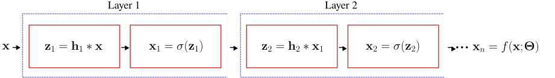
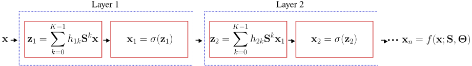
Formally, with \(\mathbf{x}_0=\mathbf{x}\),
\[ \mathbf{z}_{\ell}=\sum_{k=0}^{K-1}h_{\ell k}\mathbf{S}^{k}\mathbf{x}_{\ell-1}, \qquad \mathbf{x}_{\ell}=\sigma(\mathbf{z}_{\ell}), \qquad \ell=1,\dots,L, \]
and the network computes \(\mathbf{x}_{L}=f(\mathbf{x};\mathbf{S},\boldsymbol{\Theta})\) with \(\boldsymbol{\Theta}=\{h_{\ell k}\}\). Because \(\sigma\) acts pointwise, it commutes with node permutations, so the whole network inherits the permutation equivariance of its filters.
Check 3 — What we want from a GNN
Before choosing an architecture, fix the requirements:
- cost proportional to \(O(|\mathcal{E}|)\) in time and memory;
- a fixed number of parameters, independent of \(N\);
- locality, so that each output depends on a bounded neighborhood;
- applicability to inductive problems, that is, to graphs unseen during training.
The generic filter of Equation 1 satisfies 2 and 3 but not 1: the recursion \(\mathbf{S}\mathbf{x}^{(k)}\) is inherently sequential across \(k\) and cannot be parallelized, while the alternative of precomputing \(\mathbf{S}^{k}\) destroys sparsity. Architectures built directly on high-order filters, such as ChebNet (Defferrard et al. 2016), pay this price. The practical answer is to approximate.
10 Graph convolutional networks
The graph convolutional network of Kipf and Welling (Kipf and Welling 2017) is the most widely used GNN — over 40 000 citations by the time of this lecture in January 2025 — and its success comes entirely from being the cheapest possible approximation of Equation 1.
10.1 Deriving the propagation rule
Start from a first-order filter on the normalized Laplacian, keeping only \(k=0\) and \(k=1\):
\[ \mathbf{y}\approx\theta_0\mathbf{x}+\theta_1\hat{\mathbf{L}}\mathbf{x} =\theta_0\mathbf{x}-\theta_1\mathbf{D}^{-1/2}\mathbf{A}\mathbf{D}^{-1/2}\mathbf{x}, \]
using \(\hat{\mathbf{L}}=\mathbf{I}-\hat{\mathbf{A}}\) up to the constant term. Tying the two coefficients with \(\theta=\theta_0=-\theta_1\) leaves a single parameter per filter:
\[ \mathbf{y}\approx\theta\left(\mathbf{I}+\mathbf{D}^{-1/2}\mathbf{A}\mathbf{D}^{-1/2}\right)\mathbf{x}. \]
The operator \(\mathbf{I}+\hat{\mathbf{A}}\) has eigenvalues in \([0,2]\), so repeatedly applying it in a deep network amplifies or attenuates the signal and leads to exploding or vanishing gradients. The renormalization trick replaces it by the same operator computed on the graph with self-loops added:
\[ \mathbf{I}+\mathbf{D}^{-1/2}\mathbf{A}\mathbf{D}^{-1/2} \;\longrightarrow\; \tilde{\mathbf{D}}^{-1/2}\tilde{\mathbf{A}}\tilde{\mathbf{D}}^{-1/2}, \qquad \tilde{\mathbf{A}}=\mathbf{A}+\mathbf{I}, \quad \tilde{\mathbf{D}}=\operatorname{diag}(\tilde{\mathbf{A}}\mathbf{1}). \]
The resulting matrix has spectrum contained in \((-1,1]\), which keeps the diffusion stable. In the shorthand used in the lecture: GCN is the graph filter with \(h_1=1\), \(h_i=0\) for \(i\neq1\), \(\mathbf{S}=\hat{\mathbf{A}}\), plus the self-loop trick.
Definition 4 — GCN propagation rule
\[ \mathbf{H}^{(\ell+1)} =\sigma\!\left( \tilde{\mathbf{D}}^{-1/2}\tilde{\mathbf{A}}\tilde{\mathbf{D}}^{-1/2}\, \mathbf{H}^{(\ell)}\mathbf{W}^{(\ell)} \right), \qquad \mathbf{H}^{(0)}=\mathbf{X}, \tag{2}\]
where \(\mathbf{H}^{(\ell)}\) collects the activations of layer \(\ell\), \(\mathbf{W}^{(\ell)}\) is a trainable weight matrix, and \(\sigma(\cdot)\) is an activation function.
Two readings of Equation 2 are worth keeping in mind. Reading it left to right, \(\tilde{\mathbf{D}}^{-1/2}\tilde{\mathbf{A}}\tilde{\mathbf{D}}^{-1/2}\) mixes each node with its neighbors and \(\mathbf{W}^{(\ell)}\) mixes the feature channels. Reading it as a degenerate case, if the propagation matrix were \(\mathbf{I}\) — no graph structure at all — the layer would reduce to an ordinary fully connected layer \(\sigma(\mathbf{H}^{(\ell)}\mathbf{W}^{(\ell)})\). The graph is the only thing a GCN adds to an MLP.
10.2 Shapes and parameters
Worked example — A two-layer GCN, dimension by dimension
Let \(N\) be the number of nodes, \(F\) the input feature dimension, \(H_0\) the width of the hidden layer and \(C\) the number of classes. In the first layer,
\[ \underbrace{\tilde{\mathbf{D}}^{-1/2}\tilde{\mathbf{A}}\tilde{\mathbf{D}}^{-1/2}}_{N\times N} \; \underbrace{\mathbf{X}}_{N\times F} \; \underbrace{\mathbf{W}^{(0)}}_{F\times H_0} \;\Longrightarrow\; \mathbf{H}^{(1)}\in\mathbb{R}^{N\times H_0}. \]
The second layer uses \(\mathbf{W}^{(1)}\in\mathbb{R}^{H_0\times C}\) and yields \(\mathbf{H}^{(2)}\in\mathbb{R}^{N\times C}\). The vanilla two-layer GCN for node classification is therefore
\[ \begin{aligned} \bar{\mathbf{Y}} =f(\mathbf{X};\mathbf{A},\boldsymbol{\Theta}) &=\operatorname{softmax}\!\left( \hat{\mathbf{A}}_{\mathrm{sl}}\, \operatorname{ReLU}\!\left(\hat{\mathbf{A}}_{\mathrm{sl}}\mathbf{X}\mathbf{W}^{(0)}\right) \mathbf{W}^{(1)} \right),\\[4pt] \hat{\mathbf{A}}_{\mathrm{sl}}&=\tilde{\mathbf{D}}^{-1/2}\tilde{\mathbf{A}}\tilde{\mathbf{D}}^{-1/2}. \end{aligned} \]
Its parameter count is \(FH_0+H_0C\) — it does not contain \(N\). For Cora (\(N=2708\), \(F=1433\), \(C=7\)) with \(H_0=16\), that is \(1433\times16+16\times7=23\,040\) parameters, whereas a shallow embedding of the same width would need \(16\times2708=43\,328\) parameters and would still be unable to classify a new node.
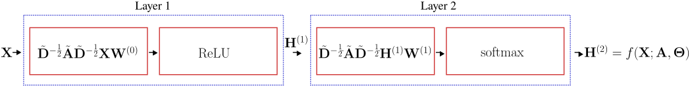
10.3 Loss function
For semi-supervised node classification, let \(\mathcal{S}\subset\mathcal{V}\) be the indices of the labelled training nodes, \(C\) the number of classes and \(\mathbf{Y}\in\{0,1\}^{N\times C}\) the one-hot label matrix. The cross-entropy loss is
\[ \mathcal{L} =-\frac{1}{|\mathcal{S}|} \sum_{i\in\mathcal{S}} \sum_{j=1}^{C} Y_{ij}\ln\bar{Y}_{ij}. \]
Only the labelled rows enter the loss, but the forward pass uses the whole graph — that is what makes the method semi-supervised. Optimize with SGD or Adam.
10.4 GCN is inductive
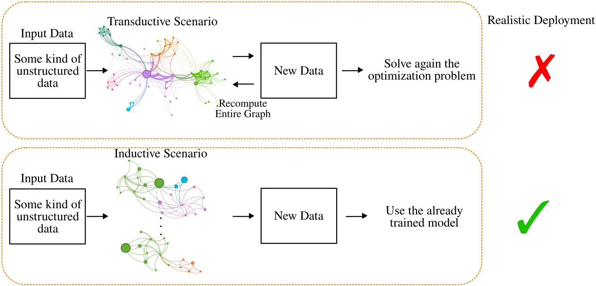
This is the decisive practical advantage over DeepWalk. The trained object is \(\{\mathbf{W}^{(\ell)}\}\), a set of matrices whose shapes depend on feature dimensions only. Give the network a different graph with the same feature dimension and it produces embeddings immediately.
10.5 What the outputs are used for
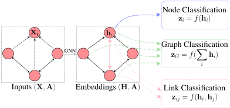
\[ \mathbf{z}_i=f(\mathbf{h}_i) \quad\text{(node)}, \qquad \mathbf{z}_{\mathcal{G}}=f\!\left(\textstyle\sum_{i}\mathbf{h}_i\right) \quad\text{(graph)}, \qquad \mathbf{z}_{ij}=f(\mathbf{h}_i,\mathbf{h}_j) \quad\text{(link)}. \]
The graph-level readout must be permutation invariant — a sum, mean, or max over nodes — otherwise relabelling the nodes would change the prediction.
11 The message-passing framework
GCN is one point in a much larger design space. The message-passing neural network framework (Gilmer et al. 2017) describes that space.
Definition 5 — Message-passing layer
With \(\mathbf{H}^{(\ell)}\in\mathbb{R}^{N\times F_\ell}\) and \(\mathbf{H}^{(0)}=\mathbf{X}\),
\[ \mathbf{h}_i^{(\ell+1)} =\phi_\ell\!\left( \mathbf{h}_i^{(\ell)}, \sum_{j\in\mathcal{N}_i} S_{ij}\, \psi_\ell\!\left(\mathbf{h}_i^{(\ell)},\mathbf{h}_j^{(\ell)}\right) \right), \tag{3}\]
where \(\psi_\ell:\mathbb{R}^{F_\ell}\times\mathbb{R}^{F_\ell}\to\mathbb{R}^{F'_\ell}\) is a message function and \(\phi_\ell:\mathbb{R}^{F_\ell}\times\mathbb{R}^{F'_\ell}\to\mathbb{R}^{F_{\ell+1}}\) is an update function.
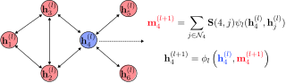
The aggregation must be permutation invariant — a sum here, but mean, max, or attention-weighted sums are equally valid — because a node’s neighbors carry no canonical order. The cost of one layer is \(O(|\mathcal{E}|)\) messages, which is requirement 1 of Check 3.
11.1 GCN as a message-passing layer
Expanding Equation 2 row by row gives
\[ \mathbf{h}_i^{(\ell+1)} =\sigma\!\left( \mathbf{W}^{\top} \sum_{j\in\mathcal{N}_i\cup\{i\}} \frac{a_{ij}}{\sqrt{(d_i+1)(d_j+1)}}\, \mathbf{h}_j^{(\ell)} \right), \tag{4}\]
where \(d_i\) is the degree of node \(i\). Reading Equation 4 against Equation 3: the message function is the identity on the neighbor’s state, the aggregation is a weighted sum over the closed neighborhood \(\mathcal{N}_i\cup\{i\}\) — the self-loop from the renormalization trick — and the update is a linear map followed by an activation.
Check 4 — Where the GCN coefficients come from
In Equation 4 the weight of neighbor \(j\) is \(a_{ij}/\sqrt{(d_i+1)(d_j+1)}\). It depends only on the degrees and the prescribed edge weights. Nothing in it is learned, and nothing in it depends on what the nodes contain. Two consequences follow: a high-degree neighbor is systematically down-weighted regardless of how informative it is, and edge features cannot be used at all.
12 Graph attention networks
GAT (Veličković et al. 2018) keeps the message-passing skeleton and replaces the fixed coefficient by a learned one, \(\alpha_{ij}=f(\mathbf{h}_i,\mathbf{h}_j)\).
Definition 6 — Graph attention layer
Let \(\vec{h}_i\in\mathbb{R}^{F}\) be the input features and \(\mathbf{W}\in\mathbb{R}^{F'\times F}\) a shared linear map. With an attention vector \(\vec{\mathbf{a}}\in\mathbb{R}^{2F'}\) and concatenation \([\cdot,\cdot]\), the attention coefficients are
\[ \alpha_{ij} =\frac{ \exp\!\left(\operatorname{LeakyReLU}\!\left(\vec{\mathbf{a}}^{\top}[\mathbf{W}\vec{h}_i,\mathbf{W}\vec{h}_j]\right)\right) }{ \sum_{k\in\mathcal{N}_i} \exp\!\left(\operatorname{LeakyReLU}\!\left(\vec{\mathbf{a}}^{\top}[\mathbf{W}\vec{h}_i,\mathbf{W}\vec{h}_k]\right)\right) }, \tag{5}\]
and the layer output is
\[ \vec{h}'_i=\sigma\!\left(\sum_{j\in\mathcal{N}_i}\alpha_{ij}\mathbf{W}\vec{h}_j\right). \]
Three points about Equation 5. The softmax runs over the neighborhood only, so the coefficients are computed on \(|\mathcal{E}|\) pairs rather than \(N^2\) — attention here is sparse by construction, which is what keeps the layer affordable. The neighborhood is understood to include \(i\) itself, so a node can attend to its own state. And the coefficients are generally asymmetric: \(\alpha_{ij}\neq\alpha_{ji}\), because each is normalized over a different neighborhood.
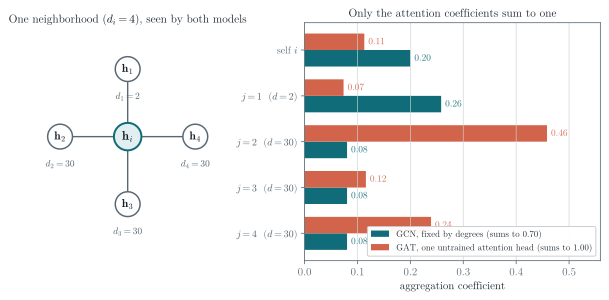
12.1 Multi-head attention
A single attention head is unstable to train. GAT runs \(K\) independent heads and combines them. In hidden layers the heads are concatenated,
\[ \vec{h}'_i=\Big\Vert_{k=1}^{K} \sigma\!\left(\sum_{j\in\mathcal{N}_i}\alpha_{ij}^{k}\mathbf{W}^{k}\vec{h}_j\right) \;\in\mathbb{R}^{KF'}, \]
whereas the final layer averages them so that the output dimension stays equal to the number of classes:
\[ \vec{h}'_i=\sigma\!\left(\frac{1}{K}\sum_{k=1}^{K}\sum_{j\in\mathcal{N}_i}\alpha_{ij}^{k}\mathbf{W}^{k}\vec{h}_j\right). \]
Check 5 — GCN or GAT?
GCN aggregates with fixed weights read off the adjacency matrix. It is cheap, has few parameters, and is a strong default on homophilous graphs and at scale.
GAT aggregates with implicit weights produced by an attention mechanism. It has more capacity, can down-weight unhelpful neighbors, and accepts edge features, at the cost of more parameters and more computation per edge. It is the sensible middle ground between a GCN and a full graph transformer.
Test GCN first. It is fast enough to tell you within minutes whether the graph is helping at all.
13 Limitations of message-passing models
Every architecture above is an approximation of the graph filter of Equation 1, and the approximation has consequences.
13.1 Homophily and heterophily
Definition 7 — Node homophily index
\[ H(\mathcal{G})=\frac{1}{|\mathcal{V}|}\sum_{i\in\mathcal{V}}\frac{|\mathcal{N}_i^{s}|}{|\mathcal{N}_i|}, \]
where \(\mathcal{N}_i^{s}\) is the set of neighbors of \(i\) carrying the same label as \(i\). If every neighbor of every node shares its label then \(H(\mathcal{G})=1\); \(H(\mathcal{G})\to0\) indicates strong heterophily.
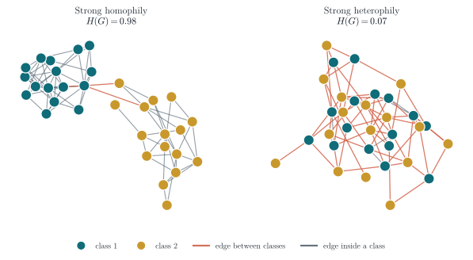
The intuition is immediate: message passing averages a node with its neighbors, which helps precisely when neighbors share the node’s label. The formal statement is spectral. A GCN layer applies \(\hat{\mathbf{A}}_{\mathrm{sl}}\), whose eigenvalues \(\mu\) lie in \((-1,1]\), and \(L\) layers apply \(\mu^{L}\). Since \(|\mu|<1\) away from the top of the spectrum, every component except the smoothest is suppressed: a stack of GCN layers is a low-pass filter.
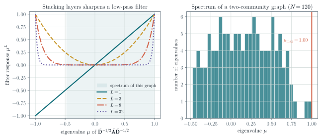
numpy.
A heterophilous label field is a high-frequency signal on the graph: it alternates between neighbors. A low-pass model cannot represent it. If your GNN underperforms a plain MLP on the same features, measure \(H(\mathcal{G})\) before changing the architecture — low homophily is a common explanation.
13.2 Over-smoothing
Depth usually helps in deep learning. In GNNs it often does not, and one reason is over-smoothing: as layers are stacked, node embeddings converge to values that no longer distinguish the nodes.
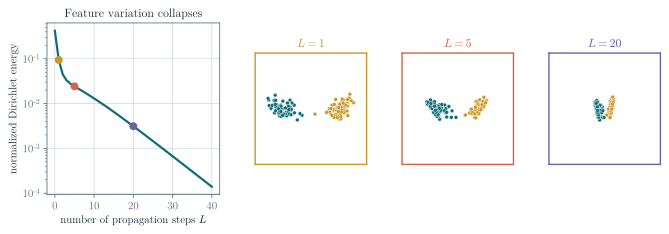
The same spectral argument explains it. Repeated application of \(\hat{\mathbf{A}}_{\mathrm{sl}}\) drives every signal toward the leading eigenvector, which is the same for all nodes up to a degree-dependent scale. Equivalently, treat the graph as a Markov chain: the number of layers is the number of steps, and beyond the mixing time the chain has forgotten where it started. The discriminative information disappears with it.
13.3 Over-squashing
A second failure mode appears when the task needs information from far away. A \(k\)-layer model reads a \(k\)-hop neighborhood, and that neighborhood grows fast.
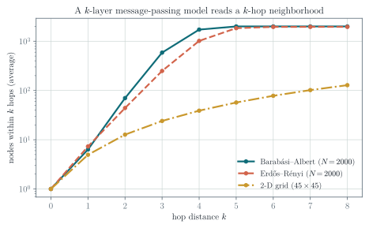
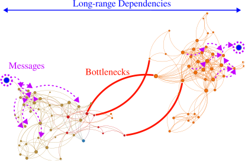
So deep GNNs face a pincer: shallow models cannot see far enough, and deep models both over-smooth and over-squash. Whether we genuinely need deep GNNs remains an open research question; the current evidence is that we need them when the task has genuine long-range interactions.
13.4 Practical remedies
PairNorm (Zhao and Akoglu 2020) attacks over-smoothing directly by forbidding the embeddings to converge. It centers and rescales the representations between layers:
\[ \mathbf{x}_i^{c}=\mathbf{x}_i-\frac{1}{N}\sum_{j\in\mathcal{V}}\mathbf{x}_j \quad\text{(centering)}, \qquad \mathbf{x}'_i=s\,\frac{\mathbf{x}_i^{c}}{\sqrt{\frac{1}{N}\sum_{j\in\mathcal{V}}\Vert\mathbf{x}_j^{c}\Vert_2^{2}}} \quad\text{(scaling)}, \]
with \(s\) a scale hyperparameter. The total pairwise distance is held constant, so the cloud cannot contract to a point.
DropEdge (Rong et al. 2020) removes a random fraction of edges at every training step. It slows the mixing of the underlying chain, and as a side benefit reduces the cost of a layer, since the complexity is proportional to \(O(|\mathcal{E}|)\).
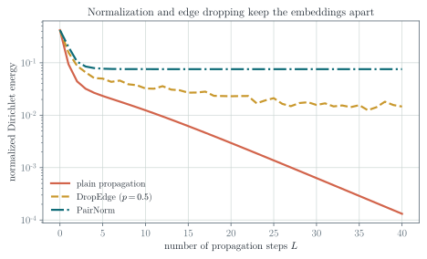
Rewiring attacks over-squashing instead. Topping et al. (Topping et al. 2022) relate over-squashing to the Ricci curvature of the graph: negatively curved edges are the bottlenecks, and if curvature is positive everywhere the receptive field grows polynomially rather than exponentially in the hop distance. One can therefore add edges around the most negatively curved regions.
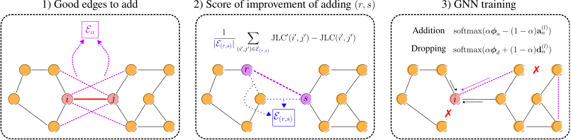
14 Implementation with PyTorch Geometric
PyTorch Geometric (PyG) is built on PyTorch, so everything you know about nn.Module, autograd and optimizers carries over. A graph is a Data object holding x (the \(N\times F\) feature matrix), edge_index (the \(2\times|\mathcal{E}|\) edge list from the worked example above), and optionally edge_attr and y.
14.1 A GCN
import torch
import torch.nn.functional as functional
from torch_geometric.nn import GCNConv
class GCN(torch.nn.Module):
def __init__(self, in_dim, out_dim, hidden, layers):
super().__init__()
self.convs = torch.nn.ModuleList()
if layers == 1:
self.convs.append(GCNConv(in_dim, out_dim))
else:
self.convs.append(GCNConv(in_dim, hidden))
for _ in range(layers - 2):
self.convs.append(GCNConv(hidden, hidden))
self.convs.append(GCNConv(hidden, out_dim))
def forward(self, data):
x, edges, weights = data.x, data.edge_index, data.edge_attr
for conv in self.convs[:-1]:
x = conv(x, edges, edge_weight=weights)
x = functional.relu(x)
return self.convs[-1](x, edges, edge_weight=weights)GCNConv implements exactly Equation 2: it adds the self-loops, computes \(\tilde{\mathbf{D}}^{-1/2}\tilde{\mathbf{A}}\tilde{\mathbf{D}}^{-1/2}\) from edge_index, and applies \(\mathbf{W}^{(\ell)}\). It never materializes an \(N\times N\) matrix.
Check 6 — Logits, not probabilities
The forward above returns unnormalized scores. torch.nn.CrossEntropyLoss applies log_softmax internally, so it expects exactly that. Returning x.softmax(dim=-1) and then calling CrossEntropyLoss applies the softmax twice, which flattens the gradients and slows training badly.
Pick one convention and hold it: return logits and use CrossEntropyLoss, or return log_softmax(x, dim=-1) and use NLLLoss.
A training step on a node-classification dataset then looks like:
model = GCN(
in_dim=dataset.num_features,
out_dim=dataset.num_classes,
hidden=16,
layers=2,
)
optimizer = torch.optim.Adam(
model.parameters(), lr=0.01, weight_decay=5e-4
)
criterion = torch.nn.CrossEntropyLoss()
model.train()
for epoch in range(200):
optimizer.zero_grad()
# One forward pass over the whole graph ...
scores = model(data)
# ... but the loss reads the labelled nodes only.
mask = data.train_mask
loss = criterion(scores[mask], data.y[mask])
loss.backward()
optimizer.step()14.2 A GAT
import torch
import torch.nn.functional as functional
from torch_geometric.nn import GATConv
class GAT(torch.nn.Module):
def __init__(self, in_dim, out_dim, hidden, layers, heads=2):
super().__init__()
self.convs = torch.nn.ModuleList()
wide = hidden * heads # width after concatenating the heads
if layers == 1:
self.convs.append(
GATConv(in_dim, out_dim, heads=heads, concat=False)
)
else:
# Hidden layers concatenate the heads; the output layer
# averages them, so the last dimension is the class count.
self.convs.append(
GATConv(in_dim, hidden, heads=heads, concat=True)
)
for _ in range(layers - 2):
self.convs.append(
GATConv(wide, hidden, heads=heads, concat=True)
)
self.convs.append(
GATConv(wide, out_dim, heads=heads, concat=False)
)
def forward(self, data):
x, edges = data.x, data.edge_index
for conv in self.convs[:-1]:
x = functional.elu(conv(x, edges))
return self.convs[-1](x, edges)Note the interface difference: GCNConv takes scalar edge weights through edge_weight, whereas GATConv takes vector-valued edge features through edge_attr and requires edge_dim to be set at construction. The original GAT paper uses ELU rather than ReLU in the hidden layers.
15 Exercises
15.1 Exercise 1 — Convolution as a polynomial
Take the directed line graph on five nodes with \(\mathbf{S}\) as defined above. Compute \(\mathbf{S}^{2}\) and \(\mathbf{S}^{3}\), and verify that \(\mathbf{z}=\sum_{k=0}^{2}h_k\mathbf{S}^{k}\mathbf{x}\) reproduces the finite impulse response filter \(z_i=h_0x_i+h_1x_{i-1}+h_2x_{i-2}\).
15.2 Exercise 2 — Permutation equivariance
Prove that \(\mathbf{H}(\mathbf{P}\mathbf{S}\mathbf{P}^{\top})\mathbf{P}\mathbf{x}=\mathbf{P}\mathbf{H}(\mathbf{S})\mathbf{x}\) for any permutation matrix \(\mathbf{P}\) and any polynomial filter \(\mathbf{H}\). Where is \(\mathbf{P}^{\top}\mathbf{P}=\mathbf{I}\) used?
15.3 Exercise 3 — The renormalization trick
Show that the eigenvalues of \(\mathbf{I}+\mathbf{D}^{-1/2}\mathbf{A}\mathbf{D}^{-1/2}\) lie in \([0,2]\) for a connected undirected graph, and explain in one sentence why repeatedly applying an operator with spectral radius \(2\) is a problem in a deep network.
15.4 Exercise 4 — Counting parameters
A three-layer GCN is applied to a graph with \(N=10^{6}\) nodes, \(F=500\) input features, hidden width \(H=64\) and \(C=10\) classes. How many trainable parameters does it have? How many would a shallow embedding of width \(64\) require? Which quantity depends on \(N\)?
15.5 Exercise 5 — GCN coefficients
For the neighborhood in Figure 18, verify the GCN coefficients \(a_{ij}/\sqrt{(d_i+1)(d_j+1)}\) by hand using the degrees printed in the figure, and confirm that the reported values are these coefficients after normalization. Then state what would change if node \(3\) gained fifty new neighbors elsewhere in the graph — under GCN, and under GAT.
15.6 Exercise 6 — Homophily
Construct a graph on eight nodes with two classes and \(H(\mathcal{G})=0\). Compute the output of one GCN layer with \(\mathbf{W}=\mathbf{I}\) on the one-hot label signal, and explain why a classifier reading that output performs worse than one reading the raw features.
15.7 Exercise 7 — Over-smoothing in practice
Reproduce Figure 21 with the script in scripts/figures/lecture_02_figures.py. Replace the propagation operator \(\tilde{\mathbf{D}}^{-1/2}\tilde{\mathbf{A}}\tilde{\mathbf{D}}^{-1/2}\) by the unnormalized \(\mathbf{A}\) and explain the change in the Dirichlet energy curve using the spectral radius of \(\mathbf{A}\).
16 Main takeaways
- A convolution is a polynomial in a shift operator; time and space are just special graphs, so the definition transfers to any graph unchanged.
- Graph filters are local, have a fixed number of parameters, and are permutation equivariant — the three properties that shallow embeddings could not deliver.
- A GNN composes graph filters with pointwise nonlinearities; with a directed line graph it reduces exactly to a CNN.
- The exact filter is expensive, since powers of \(\mathbf{S}\) fill in and the recursion cannot be parallelized. Practical architectures approximate it.
- GCN is the cheapest such approximation: one hop, one shared weight matrix, self-loops for stability. It is inductive, costs \(O(|\mathcal{E}|)\), and should be your first baseline.
- Message passing is the general framework; GAT stays inside it and replaces the degree-based coefficients by learned attention.
- Message-passing models are low-pass filters. They assume homophily, they over-smooth with depth, and they over-squash long-range information. PairNorm, DropEdge, and curvature-based rewiring mitigate these, and none of them solves the problem completely.
- Plenty of open problems remain — which is good news if you are looking for a research topic.
References and provenance
This web note is adapted from the Lecture 2 slides by Jhony H. Giraldo. Notation was normalized against Lecture 1 (\(\mathbf{H}^{(0)}=\mathbf{X}\) throughout), the GCN propagation rule was derived rather than stated, and several derivations, dimension counts, and code notes were added.
The diagrams reproduce the original course vectors. Figure 20, Figure 19, Figure 21, Figure 24, Figure 22, and Figure 18 are new and were computed with numpy and networkx; the script that produces them is scripts/figures/lecture_02_figures.py in this repository, so every number in those panels can be reproduced and modified.